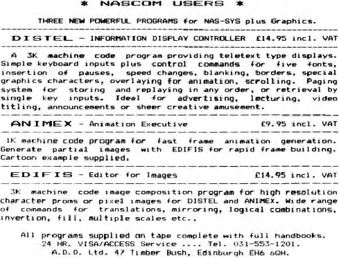

the port decoding seems incomplete. It is necessary to connect
/IOEXT as well as /NASIO to the lowest decode of B4 (ie. pin 9)
otherwise the Nascom 1 on-board port decoder will not be
encoded. (At the moment I am not clear as to why /IOEXT and
/NASIO are seperated on the buffer board.) It is possible to use
the on-board PIO
by using a circuit by Mr. D. Ritchie, published in
INMC.
The values of the electrolytic power supply decoupling
capacitors are not given anywhere, nor is there any information
on getting the extra data and address signals out of the Nascom 1
video circuitry. However, this information is available in
Micropower, Vol. 1, No. 1
in the article by Mr. S. Hope, but
note that the connectors to pins 10 and 14 of the character
generator socket must be swapped over.
Actual construction is quite straight-forward. I used
sockets throughout despite the warning in the manual. The
silk-screened legends for the R’s and C’s are a little ambiguous
in places. There is a small amount of handwiring to do – mainly
between the address lines and the PCB, and few to add from the
memory mapper. I used verowire with the combs glued to the
outside edge of the board to guide the wires.
Overall then, a good quality product allowing one to expand
a Nascom to 64k at a very reasonable price. Unfortunately, it
took me a while to get mine going due solely to errors in the
documentation and on the PCB itself. At least I know more about
fay Nascom now than I did before I started building the PCB.
